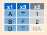
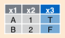

13 Two-table operations
So far we have looked at data operations defined over single tables and data frames. In this section we look at efficient methods to combine data from multiple tables. The fundamental operation here is the join, which is a workhorse of database system design and impementation. The join operation combines rows from two tables to create a new single table, based on matching criteria specified over attributes of each of the two tables.
Consider the example of joining the flights and airlines table:
library(nycflights13)
data(flights)
data(airlines)Let’s take a look at the flights table again:
flights## # A tibble: 336,776 x 19
## year month day dep_time sched_dep_time dep_delay arr_time
## <int> <int> <int> <int> <int> <dbl> <int>
## 1 2013 1 1 517 515 2 830
## 2 2013 1 1 533 529 4 850
## 3 2013 1 1 542 540 2 923
## 4 2013 1 1 544 545 -1 1004
## 5 2013 1 1 554 600 -6 812
## 6 2013 1 1 554 558 -4 740
## 7 2013 1 1 555 600 -5 913
## 8 2013 1 1 557 600 -3 709
## 9 2013 1 1 557 600 -3 838
## 10 2013 1 1 558 600 -2 753
## # … with 336,766 more rows, and 12 more variables: sched_arr_time <int>,
## # arr_delay <dbl>, carrier <chr>, flight <int>, tailnum <chr>,
## # origin <chr>, dest <chr>, air_time <dbl>, distance <dbl>, hour <dbl>,
## # minute <dbl>, time_hour <dttm>And add the airlines table:
airlines## # A tibble: 16 x 2
## carrier name
## <chr> <chr>
## 1 9E Endeavor Air Inc.
## 2 AA American Airlines Inc.
## 3 AS Alaska Airlines Inc.
## 4 B6 JetBlue Airways
## 5 DL Delta Air Lines Inc.
## 6 EV ExpressJet Airlines Inc.
## 7 F9 Frontier Airlines Inc.
## 8 FL AirTran Airways Corporation
## 9 HA Hawaiian Airlines Inc.
## 10 MQ Envoy Air
## 11 OO SkyWest Airlines Inc.
## 12 UA United Air Lines Inc.
## 13 US US Airways Inc.
## 14 VX Virgin America
## 15 WN Southwest Airlines Co.
## 16 YV Mesa Airlines Inc.Here, we want to add airline information to each flight. We can do so by joining the attributes of the respective airline from the airlines table with the flights table based on the values of attributes flights$carrier and airlines$carrier.
Specifically, every row of flights with a specific value for flights$carrier, is joined with the the corresponding row in airlines with the same value for airlines$carrier. We will see four different ways of performing this operation that differ on how non-matching observations are handled.
13.1 Left Join
In a left join, all observations on left operand (LHS) are retained:


flights %>%
left_join(airlines, by="carrier")## # A tibble: 336,776 x 20
## year month day dep_time sched_dep_time dep_delay arr_time
## <int> <int> <int> <int> <int> <dbl> <int>
## 1 2013 1 1 517 515 2 830
## 2 2013 1 1 533 529 4 850
## 3 2013 1 1 542 540 2 923
## 4 2013 1 1 544 545 -1 1004
## 5 2013 1 1 554 600 -6 812
## 6 2013 1 1 554 558 -4 740
## 7 2013 1 1 555 600 -5 913
## 8 2013 1 1 557 600 -3 709
## 9 2013 1 1 557 600 -3 838
## 10 2013 1 1 558 600 -2 753
## # … with 336,766 more rows, and 13 more variables: sched_arr_time <int>,
## # arr_delay <dbl>, carrier <chr>, flight <int>, tailnum <chr>,
## # origin <chr>, dest <chr>, air_time <dbl>, distance <dbl>, hour <dbl>,
## # minute <dbl>, time_hour <dttm>, name <chr>RHS variables for LHS observations with no matching RHS observations are coded as NA.
13.2 Right Join
All observations on right operand (RHS) are retained:

flights %>%
right_join(airlines, by="carrier")## # A tibble: 336,776 x 20
## year month day dep_time sched_dep_time dep_delay arr_time
## <int> <int> <int> <int> <int> <dbl> <int>
## 1 2013 1 1 810 810 0 1048
## 2 2013 1 1 1451 1500 -9 1634
## 3 2013 1 1 1452 1455 -3 1637
## 4 2013 1 1 1454 1500 -6 1635
## 5 2013 1 1 1507 1515 -8 1651
## 6 2013 1 1 1530 1530 0 1650
## 7 2013 1 1 1546 1540 6 1753
## 8 2013 1 1 1550 1550 0 1844
## 9 2013 1 1 1552 1600 -8 1749
## 10 2013 1 1 1554 1600 -6 1701
## # … with 336,766 more rows, and 13 more variables: sched_arr_time <int>,
## # arr_delay <dbl>, carrier <chr>, flight <int>, tailnum <chr>,
## # origin <chr>, dest <chr>, air_time <dbl>, distance <dbl>, hour <dbl>,
## # minute <dbl>, time_hour <dttm>, name <chr>LHS variables for RHS observations with no matching LHS observations are coded as NA.
13.3 Inner Join
Only observations matching on both tables are retained

flights %>%
inner_join(airlines, by="carrier")## # A tibble: 336,776 x 20
## year month day dep_time sched_dep_time dep_delay arr_time
## <int> <int> <int> <int> <int> <dbl> <int>
## 1 2013 1 1 517 515 2 830
## 2 2013 1 1 533 529 4 850
## 3 2013 1 1 542 540 2 923
## 4 2013 1 1 544 545 -1 1004
## 5 2013 1 1 554 600 -6 812
## 6 2013 1 1 554 558 -4 740
## 7 2013 1 1 555 600 -5 913
## 8 2013 1 1 557 600 -3 709
## 9 2013 1 1 557 600 -3 838
## 10 2013 1 1 558 600 -2 753
## # … with 336,766 more rows, and 13 more variables: sched_arr_time <int>,
## # arr_delay <dbl>, carrier <chr>, flight <int>, tailnum <chr>,
## # origin <chr>, dest <chr>, air_time <dbl>, distance <dbl>, hour <dbl>,
## # minute <dbl>, time_hour <dttm>, name <chr>13.4 Full Join
All observations are retained, regardless of matching condition

flights %>%
full_join(airlines, by="carrier")## # A tibble: 336,776 x 20
## year month day dep_time sched_dep_time dep_delay arr_time
## <int> <int> <int> <int> <int> <dbl> <int>
## 1 2013 1 1 517 515 2 830
## 2 2013 1 1 533 529 4 850
## 3 2013 1 1 542 540 2 923
## 4 2013 1 1 544 545 -1 1004
## 5 2013 1 1 554 600 -6 812
## 6 2013 1 1 554 558 -4 740
## 7 2013 1 1 555 600 -5 913
## 8 2013 1 1 557 600 -3 709
## 9 2013 1 1 557 600 -3 838
## 10 2013 1 1 558 600 -2 753
## # … with 336,766 more rows, and 13 more variables: sched_arr_time <int>,
## # arr_delay <dbl>, carrier <chr>, flight <int>, tailnum <chr>,
## # origin <chr>, dest <chr>, air_time <dbl>, distance <dbl>, hour <dbl>,
## # minute <dbl>, time_hour <dttm>, name <chr>All values coded as NA for non-matching observations as appropriate.
13.5 Join conditions
All join operations are based on a matching condition:
flights %>%
left_join(airlines, by="carrier")specifies to join observations where flights$carrier equals airlines$carrier.
In this case, where no conditions are specified using the by argument:
flights %>%
left_join(airlines)a natural join is perfomed. In this case all variables with the same name in both tables are used in join condition.
You can also specify join conditions on arbitrary attributes using the by argument.
flights %>%
left_join(airlines, by=c("carrier" = "name"))13.6 Filtering Joins
We’ve just seen mutating joins that create new tables. Filtering joins use join conditions to filter a specific table.
flights %>% anti_join(airlines, by="carrier")## # A tibble: 0 x 19
## # … with 19 variables: year <int>, month <int>, day <int>, dep_time <int>,
## # sched_dep_time <int>, dep_delay <dbl>, arr_time <int>,
## # sched_arr_time <int>, arr_delay <dbl>, carrier <chr>, flight <int>,
## # tailnum <chr>, origin <chr>, dest <chr>, air_time <dbl>,
## # distance <dbl>, hour <dbl>, minute <dbl>, time_hour <dttm>Filters the flights table to only include flights from airlines that
are not included in the airlines table.
13.7 SQL Constructs: Multi-table Queries
Key idea: - Do a join to get an appropriate table - Use the constructs for single-table queries
You will get used to doing all at once.
For the first part, where we use a join to get an appropriate table, the general SQL construct includes: - The name of the first table to join - The type of join to do - The name of the second table to join - The join condition(s)
- Examples:
select title, year, me.name as producerName
from movies m join movieexec me
where m.producer = me.id;- Consider the query:
select title, year, producer, count(starName)
from movies join starsIn
where title = starsIn.movieTitle and year = starsIn.movieYear
group by title, year, producer- What about movies with no stars ?
- Need to use outer joins
select title, year, producer, count(starName)
from movies left outer join starsIn
on title = starsIn.movieTitle and year = starsIn.movieYear
group by title, year, producerAs we saw before, all tuples from ‘movies’ that have no matches in starsIn are included with NULLs (in dplyr this was NA).
So, if a tuple (m1, 1990) has no match in starsIn, we get (m1, 1990, NULL) in the result and the count(starName) works correctly then. Note however that count(*) would not work correctly (NULLs can have unintuitive behavior)
In most systems JOIN corresponds to an inner join, and include LEFT JOIN and RIGHT JOIN as well.